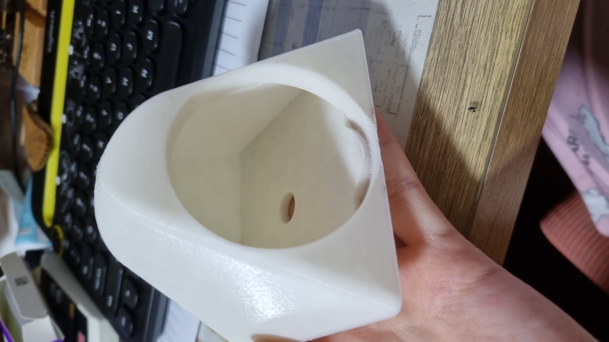
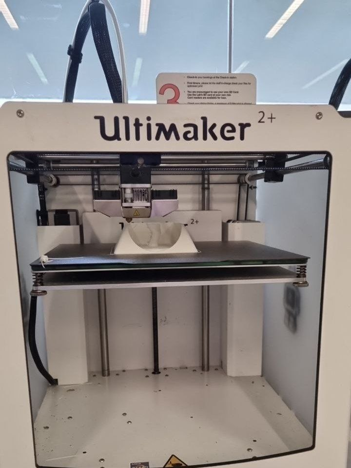
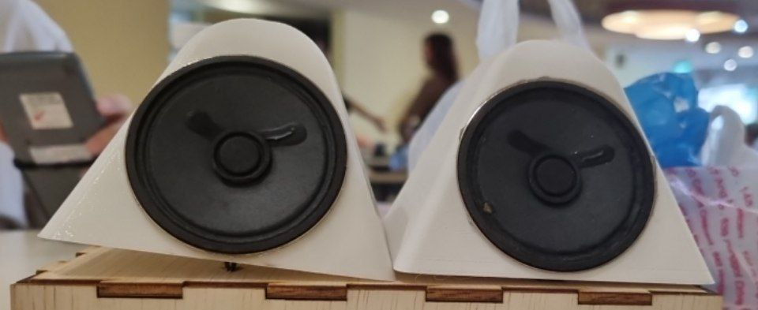
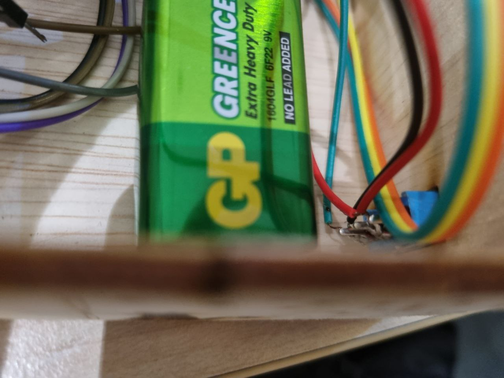
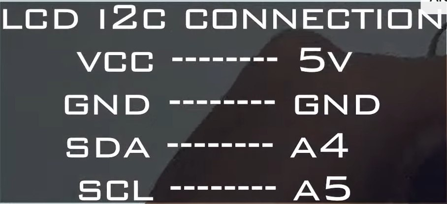
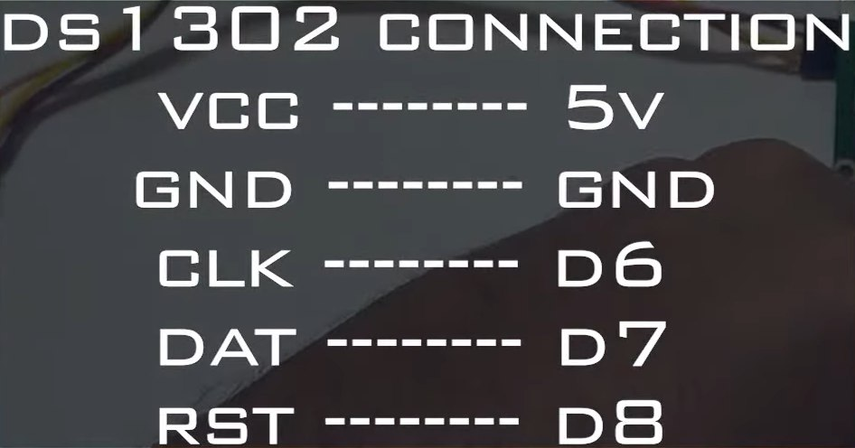
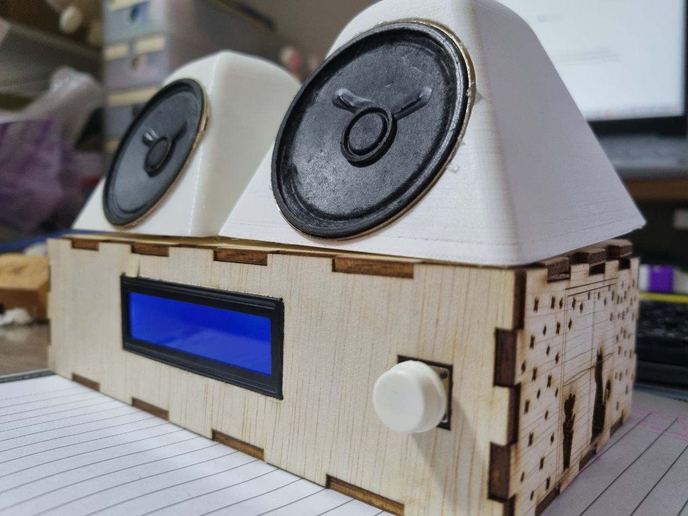
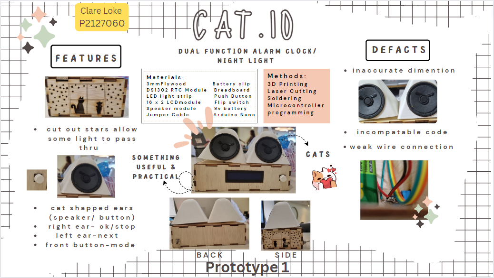

Final Project
Cat.IO
Cat.IO is a prototyped multi-function alarm clock with built-in night lights.
In this project, I wanted to create something practical and functional that I would find useful
in my daily life.
Thus, I decided on the idea of a desk alarm clock which can double as a night light, being someone
that is afraid of the dark. As for the exterior casing of the clock, i took inspiration from the
features of one of my favourite animals, cats.
With this, Cat.IO was created.
Ideation Stage
Initial sketch of some ideas for my final project
In the initial sketch, the prototype consisted of:
- A pair of speakers that could also play music/audio other then sounding the alarm.
- 3D printed cat ears that could rotates up to 180° (90° on each sides).
- Cut outs that would be replaced by acrylic pieces to allow for light to pass through.
However, this plan did not follow through due to time constrains and the complexity that comes with
the amount of functions and features that I wanted to add into the product.
Listing Stage
Bills of Materials Methods of Approach
Modelling Stage
Model of Cat.IO
3D Printing Stage
Cat ear model
The cat ears located at the top of the board, have curved features which were not achievable via laser cutting of the plywood. Therefore, I decided to achieve the curve look of the cats ears thru 3D printing them.
3D model prototype of a cat ear
The 1st prototype revealed some errors in the dimension settings of the holes made for the speaker module and the button. It also revealed certain things such as the speaker module wires that I did not take into consideration.
Making of 2nd prototype
The 2nd prototype included the extra holes that were missed out on in the first prototype and a few added mm's to the dimentions of the ear models. However this led to the ear models being too big to fit on the box body.

1st prototype (spekears)
Lazzercutting Stage
Front view of the design
Back view of the design
I chose to use 3mm plywood for the body of the alarm clock due to its opaque properties and to
obtain a more natural look.
To make the body look more appealing, I added engravings and cuts to the sides of the box.

Side view of the design
Cuts of stars and a cat silhouette was made allow for little light to pass through fulfilling the
designs function as a night light.
Short clip of laser cutting process
Some problems faced was the unexpected extra thickness of the plywood by 0.5mm. This caused some overfitting of the laser cut pieces. The tiny size of the stars also caused some problems with the laser cut. To overcome this problem, laser cut had to be done a maximum of 3 times to ensure the board was cut through.
Programming Stage
Electronics Stage
Overview of the breadboard connection
Moving on to the assembling of the clock electronics, it was first done on a long breadboard. But, the long breadboard took up too much space in the clock therefore I decided to try minising the space by transferring everyth on a veroboard (stripboard) to minimise the space usage.
Short clip of soldering attempt onto veroboard
Throughout the process of assembling the wiring of the clock, I had the opportunity of trying out soldering. However, since i do not have experience with soldering beforehand, i faced many difficulties of having weak soldering/dry joins connections which resulted in the soldered wires falling out of place repeatedly. This process thus took up quite a fair bit of time
Soldering in progress...
However after finishing the soldering I found out that I was not suppose to directly solder the components onto the veroboard incase certain components did not work or get damaged along the way. Soldering them on directly would result in more trouble if the stated events were to happen. Therefore I went back to using the breadboard, utilising a smaller breadboard instead of the big one I used at first.
New breadboard with slightly cleaner connections
Some soldering was still required mostly onto the buttons and switch utilised in the clock.
Some parts of still requires solder when using the new breadboard
Improvements that can be implemented on this section is on the management of the wires. As can be seen from the pictures above, the wires are placed messily in the box. As for wiring, I had to figure out which cable to connect to each output. Therefore, some researching was done.
 Wiring for the LCD i2C and the DS1302 clock
Manual
right ear - ok/stop left ear - next front button - mode

Final look of Cat.IO
